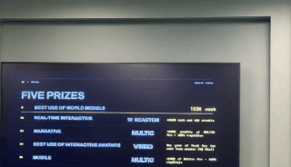
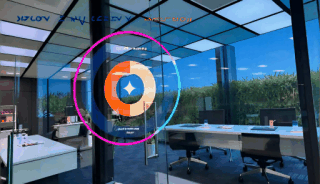
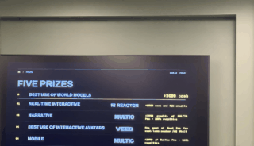
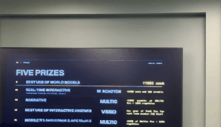
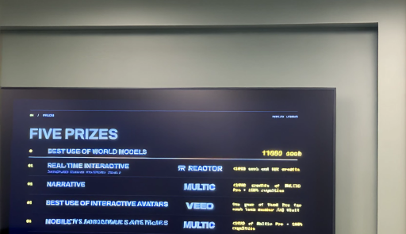
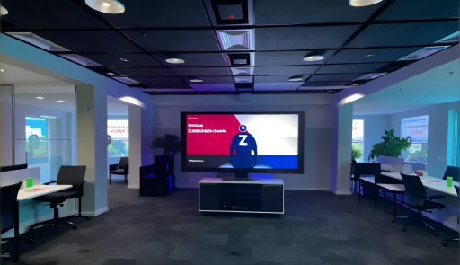
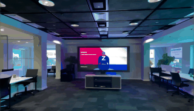
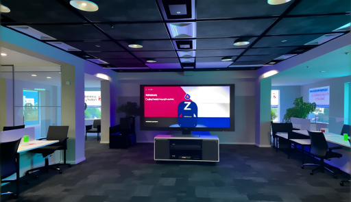
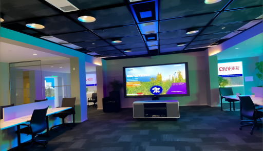

WorldGym scorecard
Physics-consistency probes for real-time world models. Scores in [0,1]; higher is more consistent/controllable.
What we found
reactor/lingbot-world-2, anchored on a photo of the prize slide at the venue, seed 42. Similarity = ½ SSIM + ½ ORB inlier ratio on 320-px greyscale frames.
Controls: right, but lateAll 6 actions moved the scene the right way. Motion starts ~2–3 s after the command.
Standing still holds0.84 similarity to the start frame in both runs — the baseline for everything else.
Walk forward and back: you don't get home0.07 and 0.18. Walking into the TV takes you through the screen into another office; walking back never returns the first room.
Turn away and back: a similar room, not the same one0.13 and 0.17. When you look back, the room is the same kind of room but not the same view.
Exhibits
Walk into the slide matching prompt · 32 s
Backup drive "residential street" prompt · 32 s
Run lbw2-venue-slide shared the Mac with a second session during controllability, so its frame rate dipped; lbw2-venue-slide-2 ran alone. Older runs are in results/_archive — their rotation score used set_camera_pose, which turned far less than 360°, and their loop test stopped before the lag-delayed return finished.
| Run | Model | Overall | stillness | controllability | loop_closure[forward] | turn_closure |
|---|
lbw2-venue-slide
2026-09-12T14:17:34 | reactor/lingbot-world-2 | 0.51 | 0.84
| 1.00
| 0.07
| 0.13
|
lbw2-venue-slide-2
2026-09-12T14:21:36 | reactor/lingbot-world-2 | 0.40 | 0.84
| — | 0.18
| 0.17
|
lbw2-venue-slide · reactor/lingbot-world-2
time to first frame: 1.698 s · steps: 19
stillness 0.84mean 0.84 · end 0.82 · 3.81s · 151 frames
controllability 1.00forward✓ back✓ strafe_left✓ strafe_right✓ look_left✓ look_right✓ · onset ≈ 119 frames · 122.28s · 1467 frames

loop_closure[forward] 0.07closure 0.07 (ssim 0.14, orb 0.00) · moved 0.93 · 13.56s · 607 frames

turn_closure 0.13closure 0.13 (ssim 0.26, orb 0.00) · moved 0.91 · 18.69s · 591 frames
lbw2-venue-slide-2 · reactor/lingbot-world-2
time to first frame: 1.597 s · steps: 7
stillness 0.84mean 0.84 · end 0.84 · 3.88s · 151 frames

loop_closure[forward] 0.18closure 0.18 (ssim 0.35, orb 0.02) · moved 0.82 · 13.71s · 609 frames



turn_closure 0.17closure 0.17 (ssim 0.23, orb 0.11) · moved 0.92 · 14.72s · 613 frames


